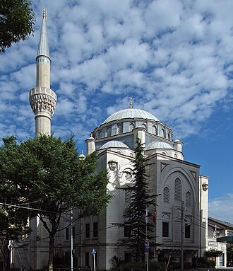

Apresentação
La mosquée de Tokyo, aussi connue sous le nom de Tokyo Camii (東京ジャーミイ, Tōkyō-jāmii), est un lieu de culte musulman et un centre culturel turc situé dans le district d'Ōyama-chō de l'arrondissement de Shibuya à Tokyo. Il s'agit de la plus grande mosquée du Japon.
جامع طوكيو يقع في حي شيبويا، طوكيو عاصمة دولة اليابان، وقد بني على الطريقة العثمانية. أحيانا ما يسمى بمسجد طوكيو أو بمسجد يويوغي. وقد نال تسمية الجامع لإقامة صلاة الجمعة فيه عادة.
The Tokyo Mosque, also known as Tokyo Camii, is a mosque with an adjoining Turkish culture center located in the Ōyama-chō district of Shibuya ward in Tokyo, Japan. It is the largest mosque in Japan.
Tokyo Camii, Japonya'nın başkenti Tokyo'da bulunan bir camidir.
Masjid Tokyo, Tōkyō-jāmii (東京ジャーミイ) juga dikenal sebagai Tokyo Camii, adalah sebuah masjid dengan sebuah pusat budaya Turki yang berada di dekatnya yang terletak di distrik Ōyama-chō, kawasan Shibuya, Tokyo, Jepang. Masjid tersebut adalah masjid terbesar di Jepang. Masjid tersebut awalnya berdiri dengan sebuah sekolah yang berdekatan dengannya pada 12 Mei 1938 oleh para imigran Bashkir dan Tatar asal Rusia yang datang ke Jepang setelah Revolusi Oktober. Masjid Tokyo sempat dirobohkan pada tahun 1986 karena struktur masjid yang sudah mulai rusak. Pada tanggal 30 Juni 2000, masjid ini dibuka kembali dengan arsitektur baru rancangan arsitek Turki Muharrem Hilmi Senalp.
Tokyo Camii ist eine Moschee mit angeschlossenem türkischen Kulturzentrum in der japanischen Hauptstadt Tokio. Sie befindet sich im Viertel Ōyama-chō des Bezirks Shibuya, in der Nähe des Bahnhofs Yoyogi-Uehara.
東京大清真寺 是日本首都東京的一座清真寺，位于澀谷區大山町井之頭通旁，是日本最大的清真寺，最多能夠容納約2,000人同時禮拜。
도쿄 자미(일본어: 東京ジャーミイ)는 일본 도쿄도 시부야구 요요기우에하라에 있는 모스크이다. 그러나 해당 모스크는 실제로 주일 터키 대사관이 소유하고 있으며, 종교 법인인 도쿄 터키 디야넷 자미(일본어: 東京トルコディヤーネットジャーミィ)에 의해 운영되고 있다. 모스크의 광열비 등은 터키 종교청이 튀르키예 리라 또는 일본 엔 등으로 부담하고 책임자인 이맘도 종교청에서 별도로 파견시킨다. 그리고 이슬람교와 터키 문화를 소개하는 터키 문화센터가 함께 병설되어 있는 시설로 널리 알려져 왔다. 그리고 일본에 거주하고 있는 이슬람교 교도들을 위한 종교 시설로, 일본 전국 각지에서 모이는 경우도 있고, 때로는 동남아시아, 파키스탄, 이란, 아랍권 등지로부터 순례하러 오가는 순례객들도 도쿄 자미를 거쳐서 오가는 경우도 있다.
Токийская мечеть (яп. 東京ジャーミイ То:кё: дзя:мии, также ) — мечеть вместе с прилегающим к ней турецким культурным центром в квартале Ояма-то токийского специального района Сибуя.
มัสยิดโตเกียว หรืออีกชื่อหนึ่งว่า โตเกียวจามี เป็นมัสยิดที่ตั้งอยู่ในย่านโอยามะโจ เขตชิบูยะ โตเกียว ประเทศญี่ปุ่น โดยเป็นมัสยิดที่ใหญ่ที่สุดในประเทศญี่ปุ่น ซึ่งเคยสร้างติดกับโรงเรียนในวันที่ 12 พฤษภาคม ค.ศ. 1938 โดยผู้อพยพชาวบัชกีร์และตาตาร์จากรัสเซียหลังการปฏิวัติเดือนตุลาคม มันถูกสร้างภายใต้การควบคุมของอับดุรเรชิด อิบราฮิม อิหม่ามคนแรกของมัสยิด กับอับดืลเฮย์ กูรบัน อาลี
Moscheea din Tokyo , cunoscută și sub numele de Tokyo Camii sau de Moscheea Turcească, este o moschee din orașul Tokyo, Japonia. Aceasta este cea mai veche moschee din acest oraș și totodată cea mai mare moschee din Japonia.
No mapa
Documentos e ligações
- Wikipédia — Français
- Wikipédia — العربية
- Wikipédia — English
- Wikipédia — Türkçe
- Wikipédia — Bahasa Indonesia
- Wikipédia — Deutsch
- Wikipédia — 中文
- Wikipédia — 日本語
- Wikipédia — 한국어
- Wikipédia — Русский
- Wikipédia — ไทย
- Wikipédia — Română
- Wikidata — Q1710283
Dados: Wikidata (CC0), atualizados de 3 em 3 meses. O ano é a data de construção mais antiga conhecida do edifício: para um edifício que se tornou mesquita mais tarde (como Santa Sofia), é a do edifício original. Fotos: Wikimedia Commons, autor e licença na página de cada foto.